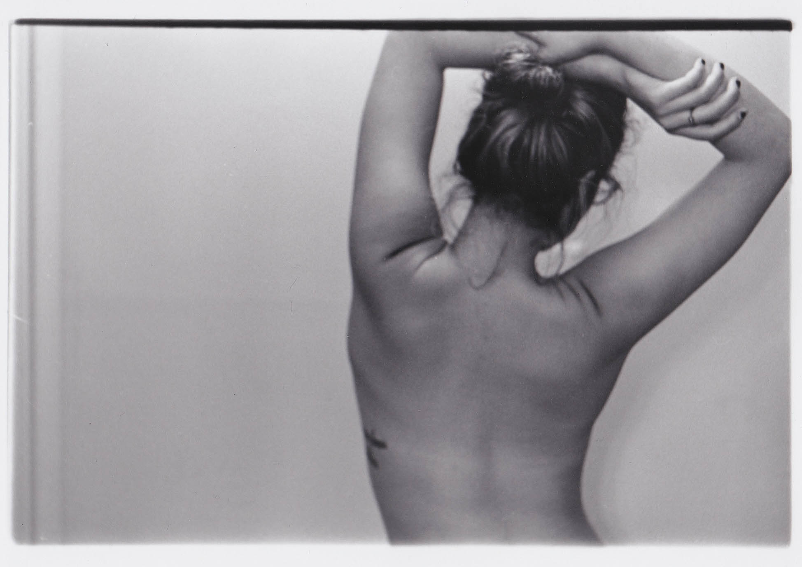
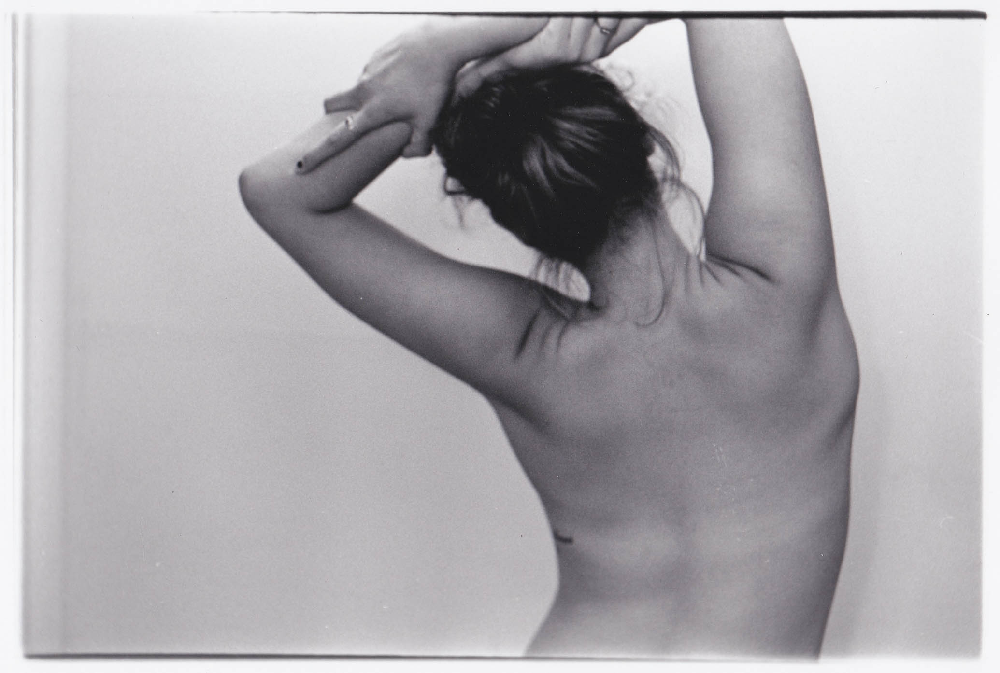
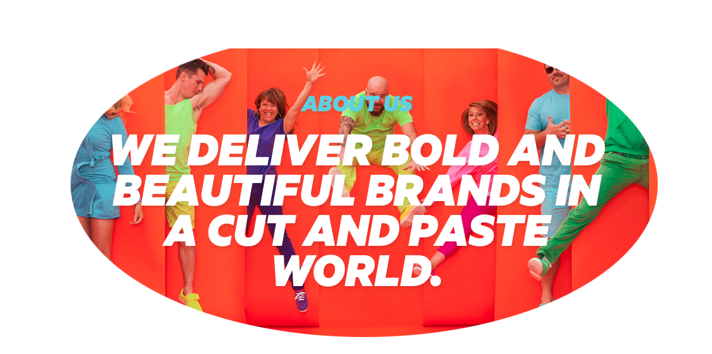
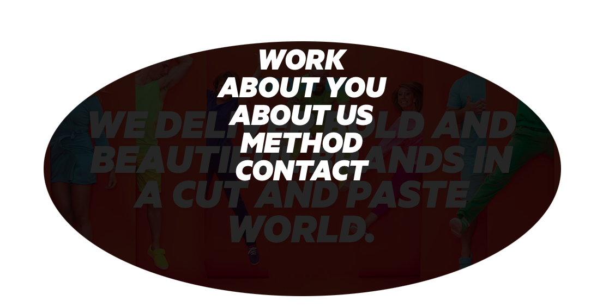

Merenda Graixinha
Designs .
Photography .
Illustrations .
Contact


Philadelphia native transplanted in the beautiful City of Baltimore.
A Jack (or Jill) of multiple trades: Designer, Photographer, Advertising Enthusiast, and a student at Towson University.
I prefer my coffee dark, my poetry darker and seeing the world through my camera lens.
Sites to See


20nine is a creative brand agency located in Center City, Philadelphia. While exploring their site I have a strong feeling that it matches their associates personalities perfectly.
I really enjoy how bright and complimentary their colors are on their home screen but once scrolling over the "About Me" description a slight shadow hovers over with options to view their other work.
Viewers can still see their original homescreen in the background while being slightly persuaded to check out just what they've done.
From a designers point of view attracting clients with eyecatching colors or prints is crucial; as is a similar priority from an Advertising aspect. Overall their style is appealing and beautiful.